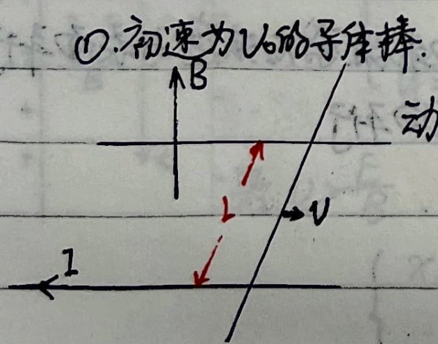
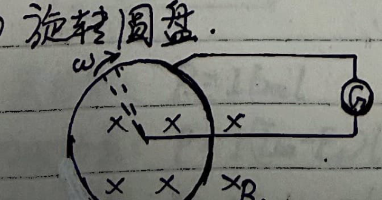
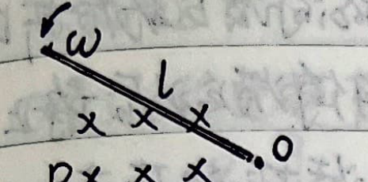
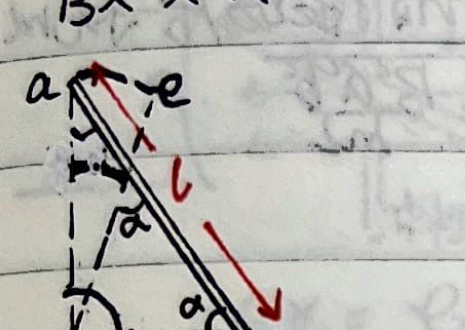
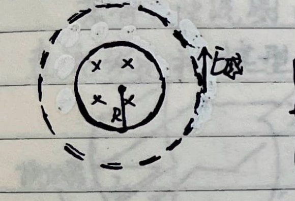
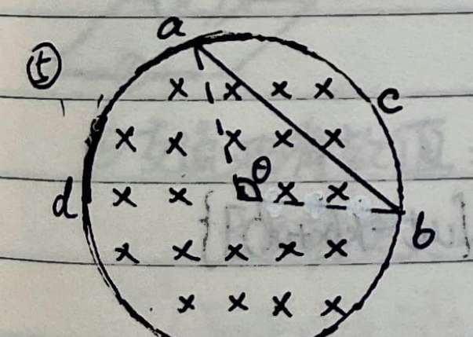
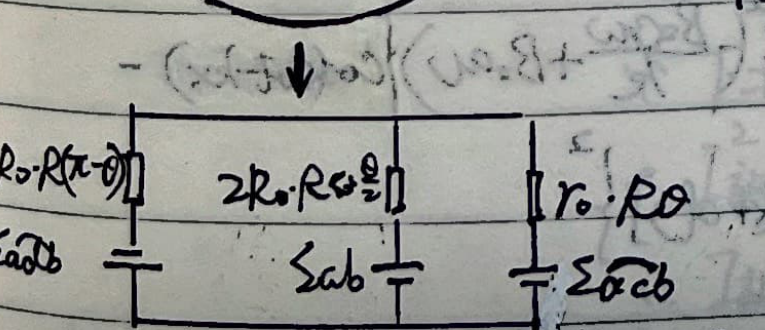
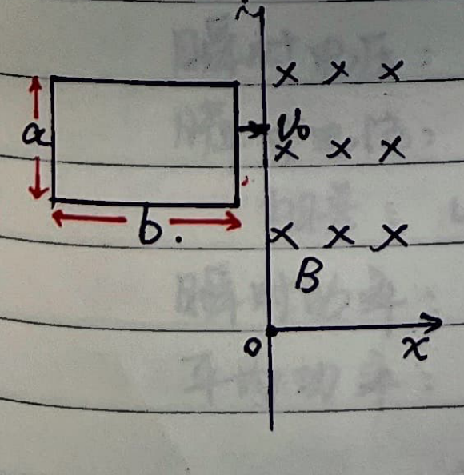

Part 12: Electromagnetic Induction and Alternating Current
1. Faraday's Law of Electromagnetic Induction
$$ \mathcal{E} = -\frac{d\Phi}{dt} = -\frac{d}{dt} \int \vec{B} \cdot d\vec{S} $$
The direction is determined by the right-hand rule applied to the direction of $\Phi$.
If $\Phi$ increases over time, the induced EMF opposes the direction of $\Phi$; conversely, it aligns with $\Phi$.
① Motional EMF:
$$ |\mathcal{E}| = \frac{d\Phi}{dt} = \frac{d}{dt} (B l x) = B l v $$
For a general conductor: $\mathcal{E}_{ab} = \int_a^b (\vec{v} \times \vec{B}) \cdot d\vec{l}$.
② Induced EMF:
$$ |\mathcal{E}| = \oint \vec{E} \cdot d\vec{l} = \oint (\vec{E}_{\text{ind}} + \vec{E}_{\text{es}}) \cdot d\vec{l} = \oint \vec{E}_{\text{ind}} \cdot d\vec{l} + \oint \vec{E}_{\text{es}} \cdot d\vec{l} = \oint \vec{E}_{\text{ind}} \cdot d\vec{l} $$
$$ \therefore \oint \vec{E}_{\text{ind}} \cdot d\vec{l} = -\frac{d}{dt} \int \vec{B} \cdot d\vec{S} = -\int \frac{\partial \vec{B}}{\partial t} \cdot d\vec{S} $$
2. Typical Examples
① Conductor Rod with Initial Velocity $v_0$:

Magnetic force $F = B I L$.
Momentum: $m \frac{dv}{dt} = -B L \cdot \frac{B L v}{R} = -\frac{B^2 L^2}{R} v$.
$$ \therefore \frac{dv}{v} = -\frac{B^2 L^2}{m R} dt \implies \ln \frac{v}{v_0} = -\frac{B^2 L^2}{m R} t \implies v = v_0 e^{-\frac{B^2 L^2}{m R} t} $$
Energy: $dW = I^2 R dt = I B L v dt$.
Also, $F dt = B I L dt = -m dv \implies dW = I B L v \frac{-m dv}{B I L} = -m v dv$.
$$ \therefore \int I^2 R dt = \frac{1}{2} m v_0^2 - \frac{1}{2} m v^2 \quad \text{(Energy is conserved)}$$
② Rotating Disk:

$$ \mathcal{E} = \frac{B dS}{dt} = B \cdot \frac{\frac{1}{2} R^2 d\theta}{dt} = \frac{1}{2} B \omega R^2 $$
③ Rotating Rod:

$$ \mathcal{E} = \int B v dl = \int B \omega l dl = \frac{1}{2} B \omega l^2 $$

$$ \mathcal{E}_{ab} = \mathcal{E}_{aO} - \mathcal{E}_{bO} = \frac{1}{2} B \omega (l \cos\alpha)^2 - \frac{1}{2} B \omega (l \sin\alpha)^2 = \frac{1}{2} B \omega l^2 \cos 2\alpha $$
④ Induced EMF of a Wire Ring:

$$ \oint \vec{E} \cdot d\vec{l} = E \cdot 2\pi r $$
$$ \begin{cases} \text{When } r > R: & E \cdot 2\pi r = \pi R^2 \frac{dB}{dt} \implies E = \frac{R^2}{2r} \frac{dB}{dt} \\ \text{When } r < R: & E \cdot 2\pi r = \pi r^2 \frac{dB}{dt} \implies E = \frac{r}{2} \frac{dB}{dt} \end{cases} $$
⑤ Loop Spanning Across Magnetic Field Regions:


$$ \mathcal{E}_{acb} = \frac{1}{2} \theta R^2 \frac{dB}{dt} $$
In the surface $abc$, $\mathcal{E} = \frac{d\Phi}{dt} = \left(\frac{1}{2} \theta R^2 - \frac{1}{2} R^2 \sin\theta\right) \frac{dB}{dt}$.
$$ \therefore \mathcal{E}_{ab} = \mathcal{E}_{acb} - \mathcal{E} = \frac{1}{2} \theta R^2 \frac{dB}{dt} - \left(\frac{1}{2} \theta R^2 \frac{dB}{dt} - \frac{1}{2} R^2 \sin\theta \frac{dB}{dt}\right) = \frac{1}{2} R^2 \sin\theta \frac{dB}{dt} $$
Where $\mathcal{E}$ is the induced EMF of the loop $acba$.
⑥ Superconducting Coil Entering a Magnetic Field (Self-inductance $L$):

Magnetic flux $\Phi = B a x = L i$.
And $F = -B a i = m \frac{d^2x}{dt^2}$.
$$ \therefore B a \left(\frac{B a x}{L}\right) + m \frac{d^2x}{dt^2} = 0 \implies \frac{B^2 a^2}{m L} x + \frac{d^2x}{dt^2} = 0 $$
$$ \therefore x = A \sin\left(\frac{B a}{\sqrt{m L}} t\right) \implies v = \frac{dx}{dt} = A \frac{B a}{\sqrt{m L}} \cos\left(\frac{B a}{\sqrt{m L}} t\right) $$
When $t=0$, $v = A \frac{B a}{\sqrt{m L}} = v_0 \implies A = v_0 \frac{\sqrt{m L}}{B a}$.
$$ \therefore x = \frac{v_0 \sqrt{m L}}{B a} \sin\left(\frac{B a}{\sqrt{m L}} t\right), \quad v = v_0 \cos\left(\frac{B a}{\sqrt{m L}} t\right) $$